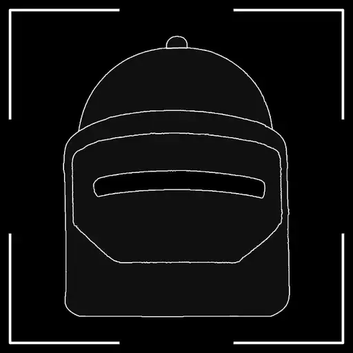
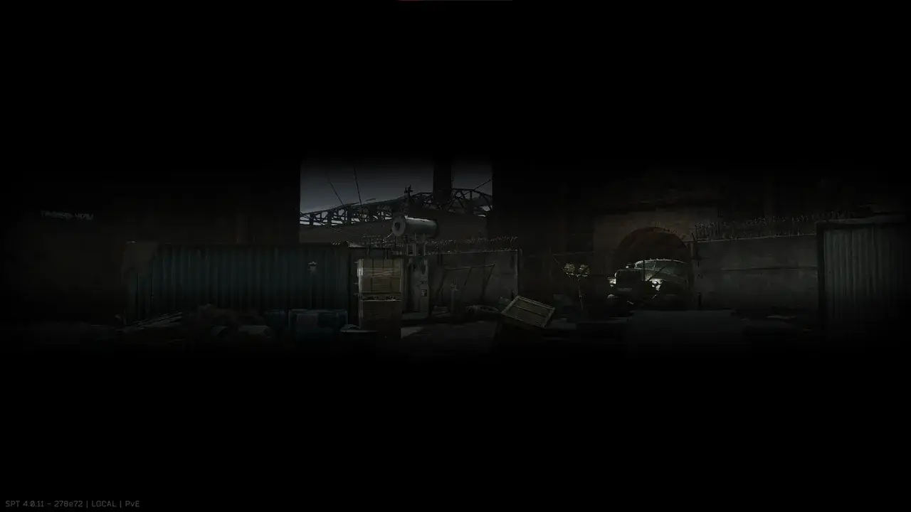
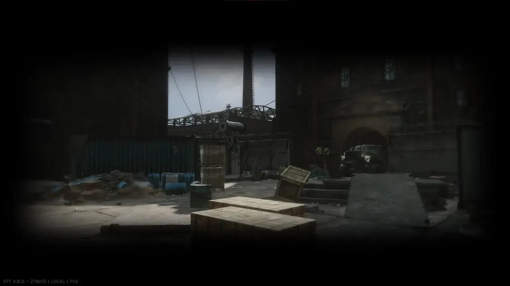

Change Helmet Visor
- Downloads
- 4,546
- Favourites
- 19
- Mod lists
- 28
Description
This is a hybrid mod which allows you to change the visor of helmets/face masks which use one. Find Maska’s narrow slit too annoying? Would you like to have more restricted vision when using a Kiver-M with a face shield? Then this mod helps you achieve that!
Features
- Change the visor type of all face shields/face covers to the same one for a more consistent experience
- Change the visor type of specific face shields/face covers using the config
- Scale the visor texture using the client-side mod
Installation
- Download the latest release
- Copy the
SPTandBepInExfolders into your installation folder - Check the
config.jsoncfile and the in-game BepInEx config manager underF12for configuration options
Preview
There are 3 options to choose from when configuring the server-side config.jsonc:
Narrow

Wide

NoMask

Configuration
Server
The server config requires you to provide the MongoID of the face shield/face cover you wish to alter.
You can find these here: https://db.sp-tarkov.com/search
Ensure that the parent ID for the item you want to alter is either ArmoredEquipment or FaceCover and that the FaceShieldComponent of the item is true
Client
The client-side configuration is accessible in the F12 BepInEx config manager.
The texture scaling/cropping does not appear immediately; you need to refresh it by re-equipping the helmet/face mask, or if it has a flippable visor, flip it up and back down for the texture to refresh.
Credits
A big thank you to tarkin for showing me how to load images natively into Unity. The texture loading is based on his texture injector, its code can be found here: https://github.com/bmpq/spt-textureinjector/tree/main
Version
2.0.0
Release 2.0.0
Introduced a client-side mod that allows for scaling up the visor textures, providing greater control over how much of the screen is covered.
Server-side changes:
- Cleaned up some nullable values
Client-side changes:
- Introduced a BepInEx plugin which allows you to change how close the visor texture appears to change how much of the screen it covers.
- The texture requires refreshing after changing the zoom value (reequipping the helmet/raising and lowering the visor). Compatible with the server-side change of the type of visor.
Version
1.0.0
Release Version